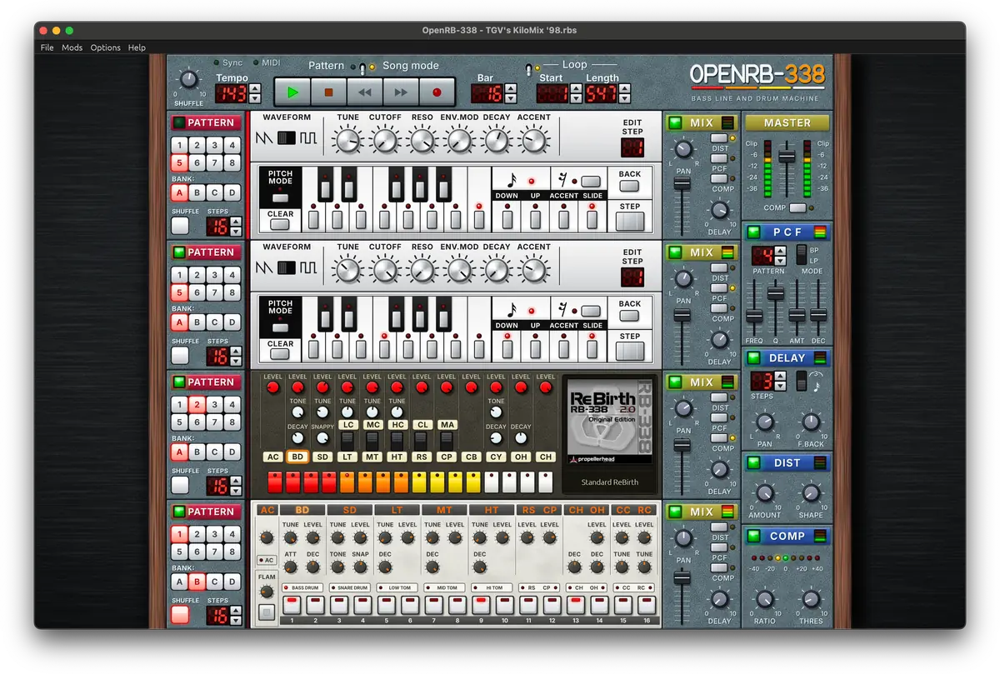
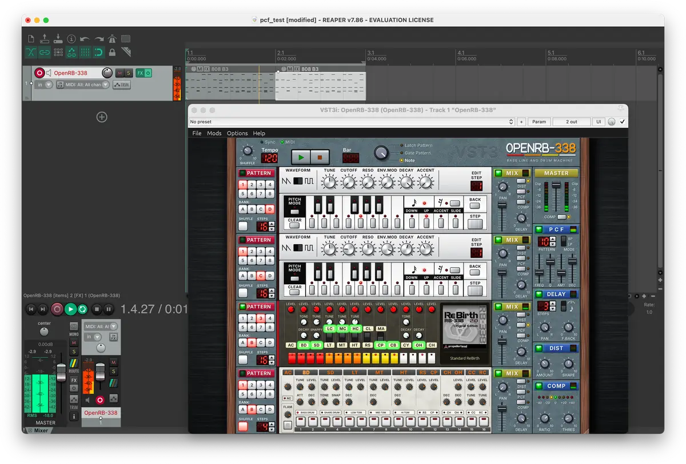

Features
- Sounds exactly like the original. The audio engine was rebuilt from ReBirth 2.01 to the bit: a song's exported loop equals the original's "Export Loop as Audio File" byte for byte, tested on 1,268 songs and a 175-render reference corpus.
- The whole machine on screen: the two 303 bass lines, the 808 and the 909, the mixer, and the delay, distortion, PCF and compressor, with pattern and song mode, loop, shuffle and recording, on a scalable vector panel in the original's layout. View > Classic switches to the loaded mod's original panel art, fully playable.
- Songs and mods: opens ReBirth 2.x songs (
.rbs) and ReBirth 1.x songs, saves RBS 4.2, and plays the drum samples of ReBirth mods (.rbm). The standard kit is built in. - Audio export of the loop to WAV, FLAC or Ogg Vorbis.
- A VST 3 instrument plugin with the same engine and panel, with three modes (Note, Latch Pattern, Gate Pattern) and MIDI mappings for the pattern selection. Besides the Mix it has outputs for the 303-1, 303-2, 808 and 909, tapped like ReBirth's ReWire channels, after each channel's effects and before its level and pan.
- The
orbcommand-line tool: renders a song to WAV, FLAC or Ogg far faster than real time, plays it, prints its facts, and works with mods. - macOS, Windows and Linux, on Intel/x64 and ARM.
Download
Release {{VERSION}}
The CLAP plugin is no longer supported. The Windows
installer and the macOS plugin .pkg delete the old
OpenRB-338.clap when you
upgrade. With the .dmg or on Linux, delete it by hand: /Library/Audio/Plug-Ins/CLAP
(macOS), ~/.clap or /usr/lib/clap (Linux). A project saved with the
CLAP plugin needs the VST3 loaded in its place.
{{PANELS}}
The macOS and Windows binaries are not signed: the first start needs your permission, see Quick start for how.
The plugin guide, with its modes and MIDI mappings: Plugin Usage.
Songs and mods
Ready-made songs and ReBirth mods (extra drum kits) to open in the app.
{{SONGS_BUTTON}} {{MODS_BUTTON}}